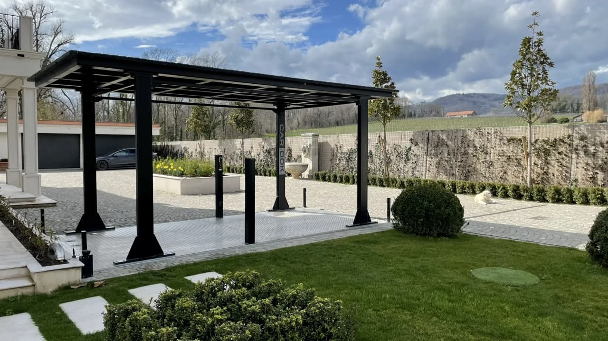
Cardok Portrait
Cardok est née d’une passion pour l’excellence en ingénierie et d’une vision visant à révolutionner les solutions de stationnement.
Fondée en 2005
Avec la précision suisse et un engagement envers la qualité, nous avons développé des systèmes sur mesure répondant aux défis uniques des propriétés de luxe à travers le monde.
Forte de deux décennies d’expérience, notre équipe d’ingénieurs et de designers qualifiés conçoit des solutions alliant innovation et fiabilité. Notre unité de fabrication interne garantit que chaque système respecte les normes les plus élevées, vous offrant un produit à la fois durable et sophistiqué.
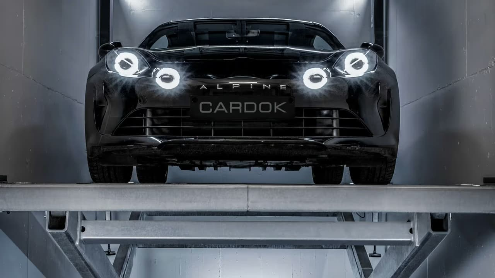
Notre mission
Chez Cardok, notre mission est de créer des solutions de levage et de stationnement qui combinent innovation, praticité et fiabilité. En maîtrisant chaque étape, de la conception à l’installation, nous garantissons des produits qui maximisent l’espace et sécurisent vos véhicules. Chez Cardok, nous offrons des services complets qui nous placent à l’avant-garde de la conception et de la livraison de systèmes de stationnement et de levage de pointe. Nos solutions sont conçues pour maximiser l’utilisation de l’espace tout en offrant une sécurité inégalée.
De la conception à l’installation
De la conception et la recherche à la production, au transport et à l’installation, nous gérons chaque étape du processus. Grâce à notre propre flotte de transport et à nos techniciens spécialisés, nous garantissons que chaque système est livré en toute sécurité et installé avec le plus grand soin, selon les normes les plus élevées.
Conception
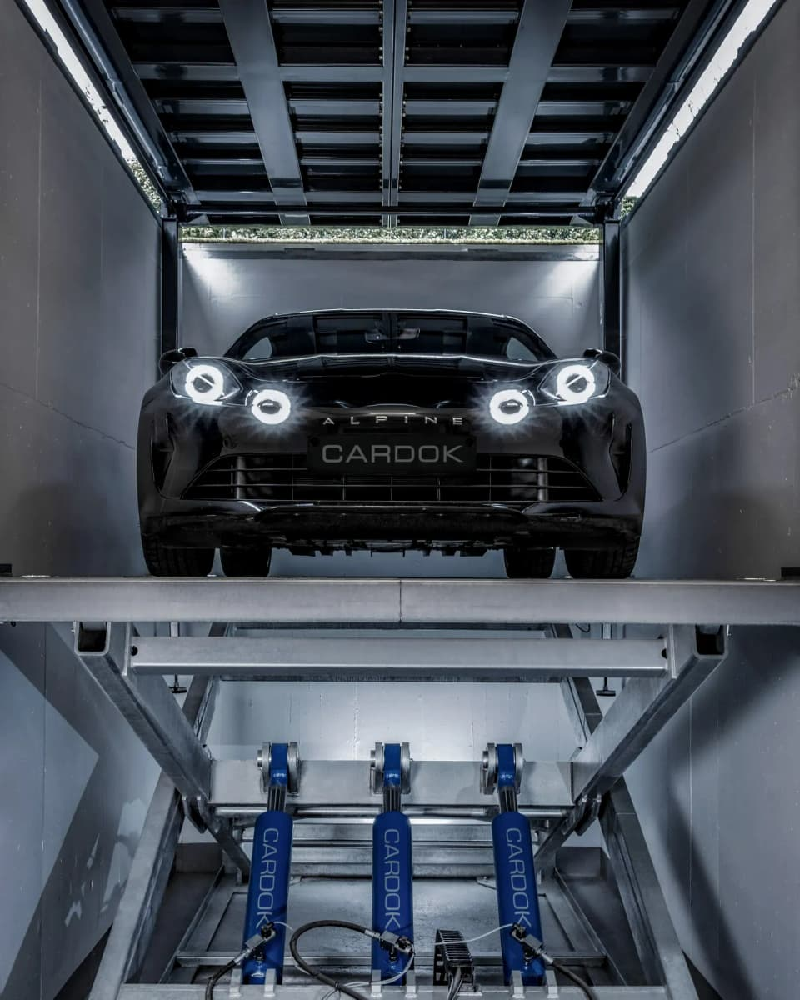
Production
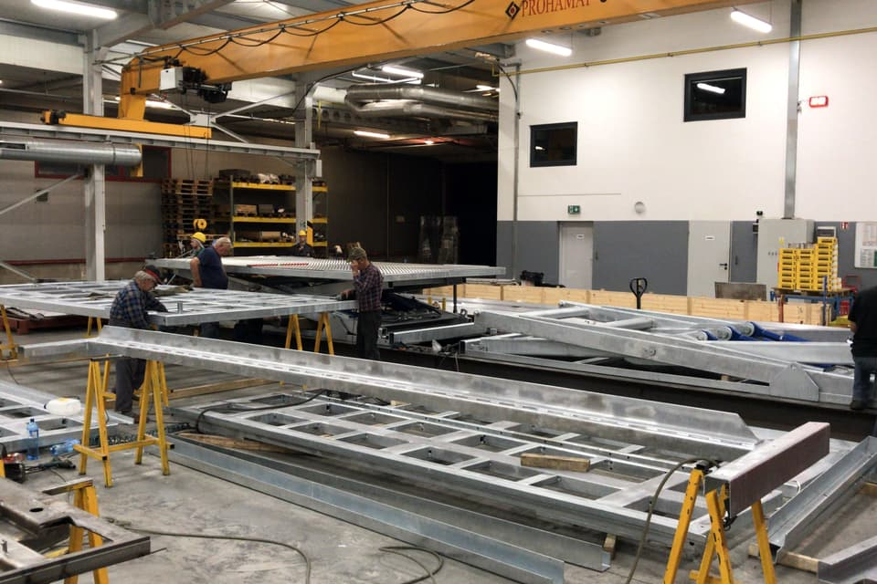
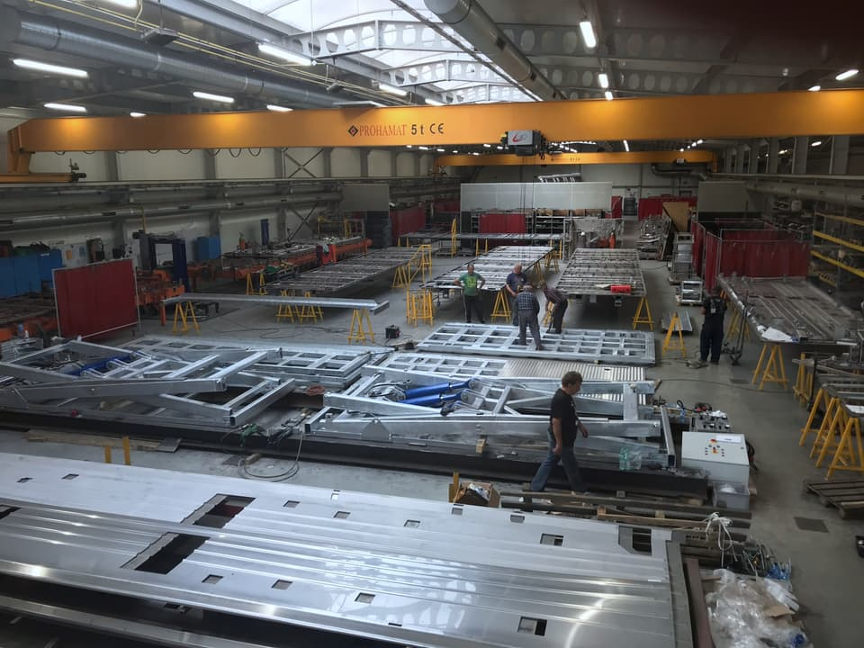
Transport
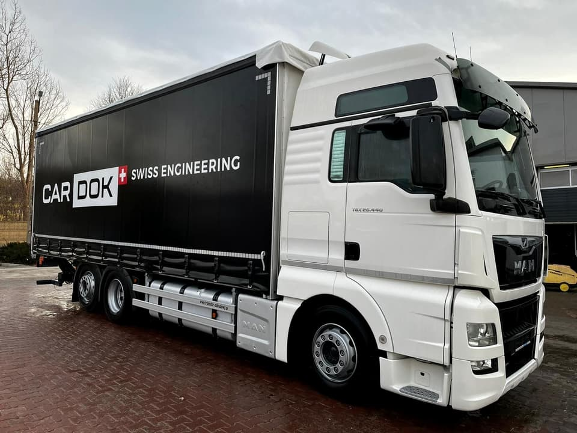
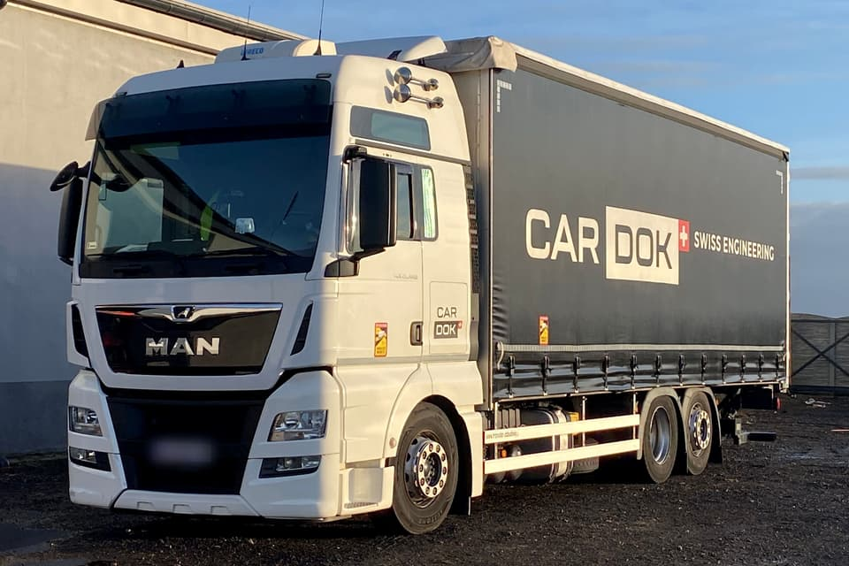
Installation
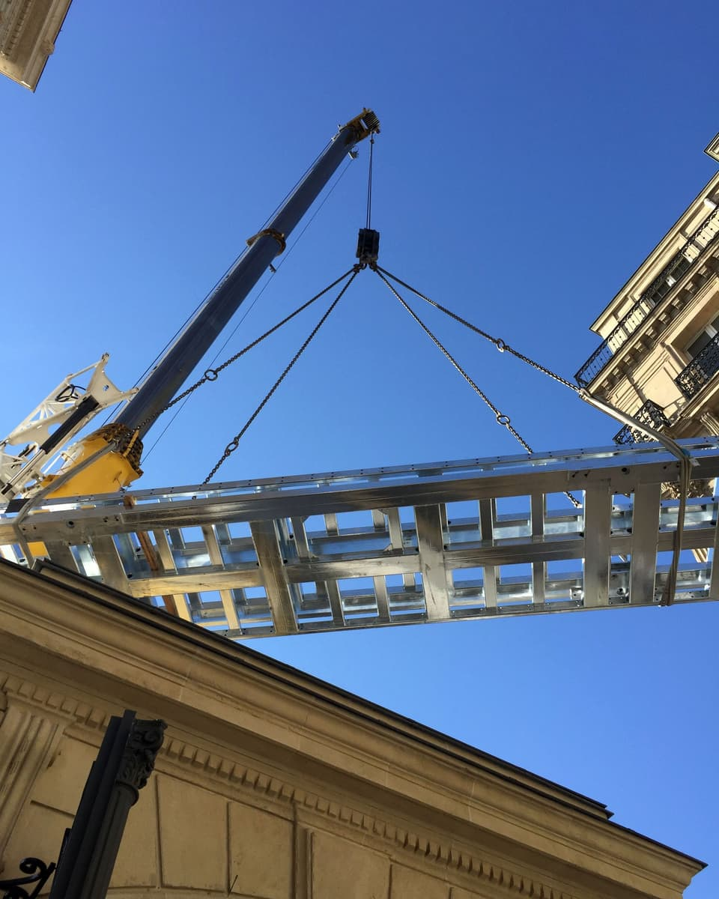
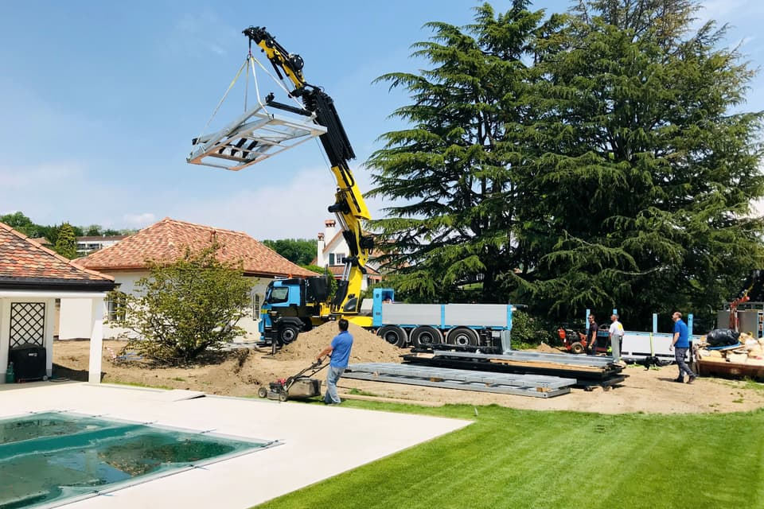
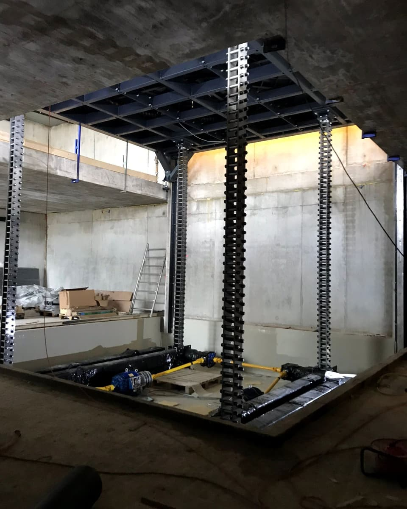
 Schéma de principe
Schéma de principeSolutions sur mesure
Tous nos produits peuvent être personnalisés avec des variations et des fonctionnalités supplémentaires pour répondre à des exigences spécifiques. Pour obtenir des informations précises et détaillées sur les offres actuelles de Cardok, n’hésitez pas à nous contacter ou à explorer notre site web.
Rencontrez nos experts
Nos spécialistes travaillent avec dévouement pour garantir un service hors pair et des solutions sur mesure.
-
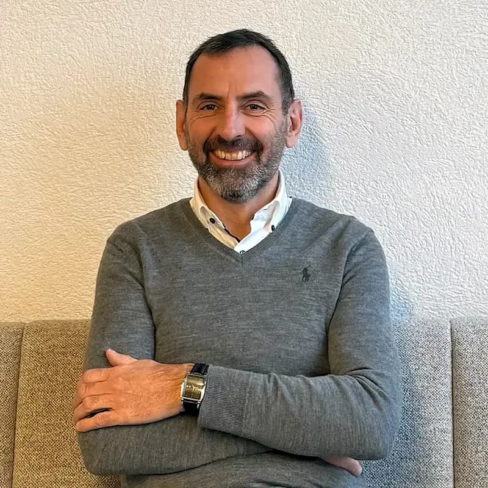
Patrick
Le visionnaire derrière Cardok
Patrick, cofondateur et visionnaire de Cardok, allie esprit entrepreneurial et innovation pratique pour donner vie à des solutions de stationnement uniques. En tant que force créative de l’entreprise, il conçoit et développe des systèmes révolutionnaires qui redéfinissent le luxe et la fonctionnalité. Animé par une passion pour relever les défis, Patrick veille à ce que chaque création Cardok reflète précision, ingéniosité et élégance.
-
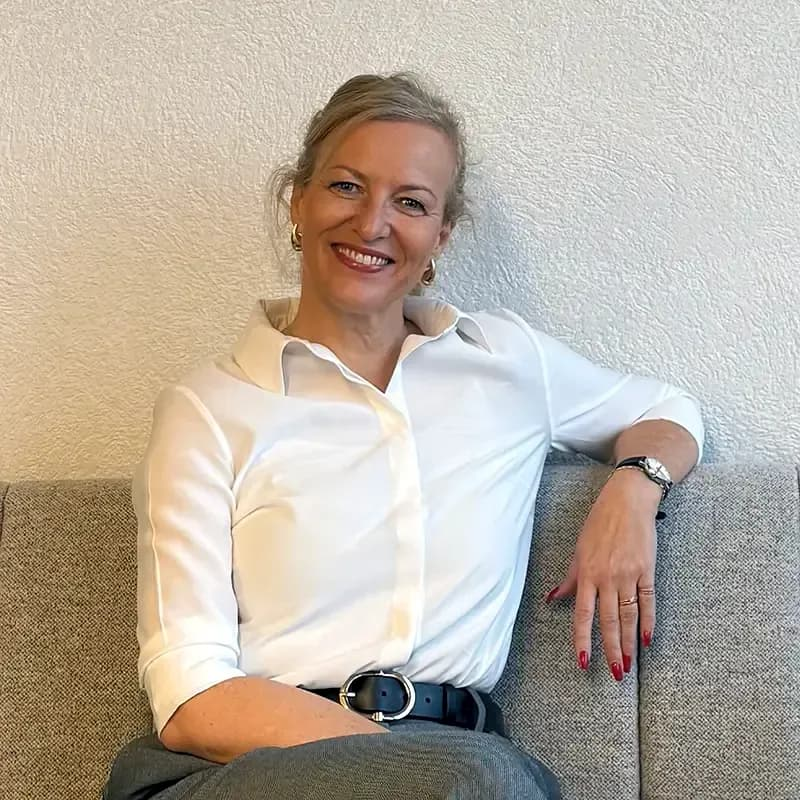
Monika
La force motrice derrière les opérations de Cardok
Monika, cofondatrice de Cardok, est la force motrice qui garantit le bon fonctionnement de l’entreprise. Avec un sens aiguisé pour les opérations et la finance, elle transforme les idées en réalité, en offrant une qualité irréprochable à chaque fois. Déterminée et rigoureuse, son approche pratique assure que chaque projet respecte les normes les plus élevées, faisant de Cardok une référence en matière d’innovation de luxe.
La qualité comme priorité
Chez Cardok, la qualité n’est pas seulement une promesse : c’est notre standard. Nos systèmes sont minutieusement conçus et testés dans nos propres installations pour garantir la sécurité, la fonctionnalité et l’esthétique qu’exige votre propriété de luxe. Nous concevons et assemblons nos systèmes sur mesure, de A à Z, dans notre atelier, en utilisant les meilleurs matériaux.
Découvrez notre cœur de métier